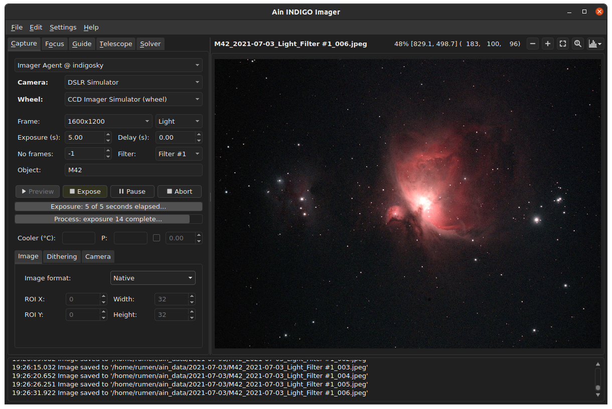
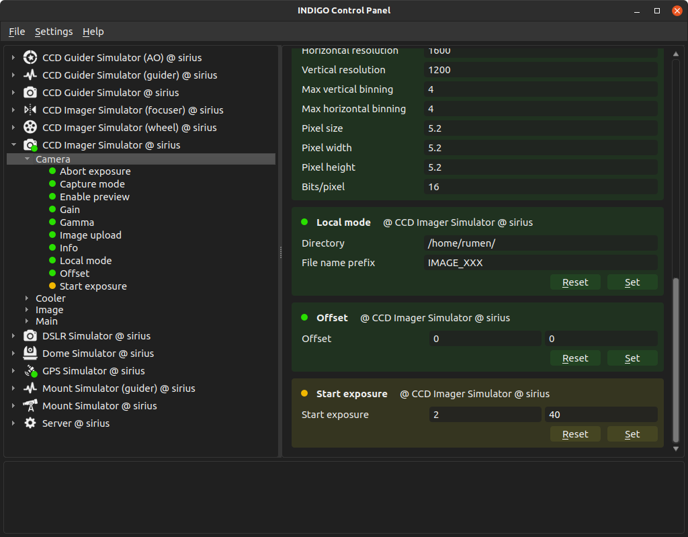
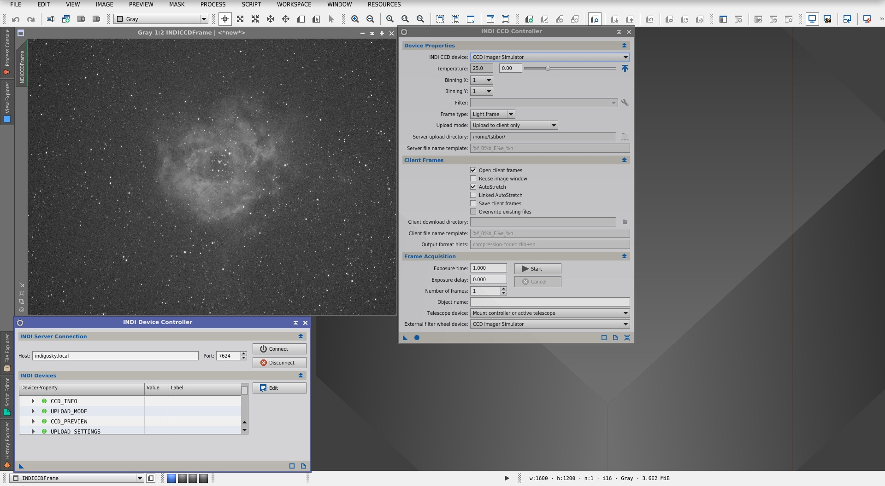
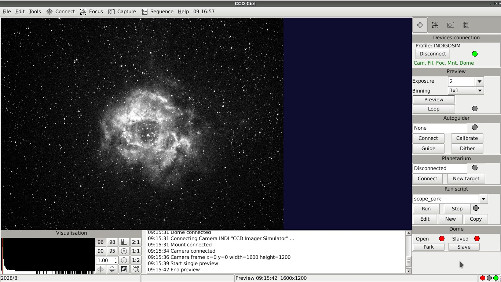

Compatible software
Many applications are already based on INDIGO, some are based on INDI, but still can work with INDIGO servers.
Many applications are already based on INDIGO, some are based on INDI, but still can work with INDIGO servers.
An open source all-in-one application for Linux & Windows. It can do Imaging, Auto Focusing, Auto Guiding, Telescope Control, Plate Solving and Viewing Images.

An open source INDIGO Control Panel for Linux & Windows.

A commercial application for controlling main cameras, focusers and wheels for macOS.

A native commercial application for controlling Nikon, Canon, Sony and Fuji mirror and mirrorless cameras and focusers for macOS.

An advanced commercial INDIGO control panel with built-in server for macOS.

An advanced astrophotography post-processing software with INDIGO plug-in.

A partially compatible open-source for all-in-one application for Windows and macOS

A partially compatible open-source all-in-one application for Linux, Windows and macOS.

A partially compatible open source guiding application for Linux, macOS and Windows.